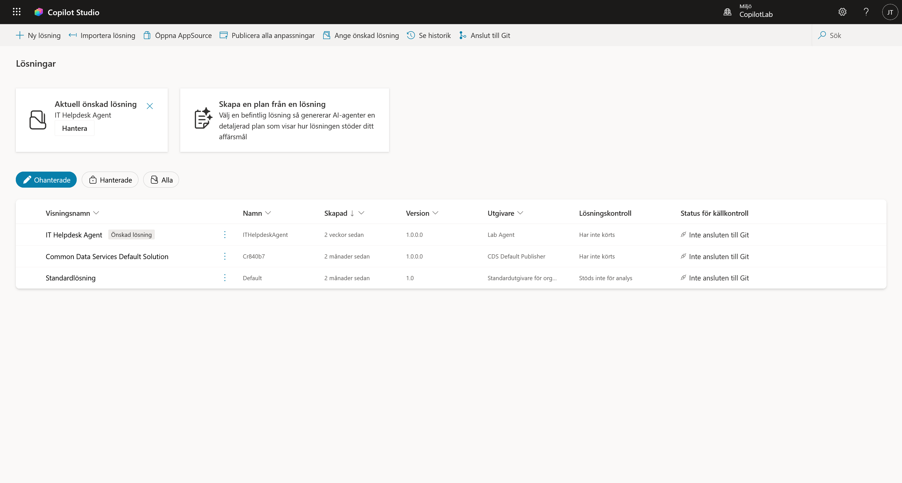
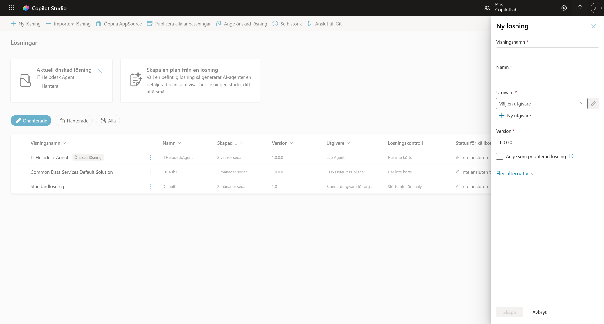
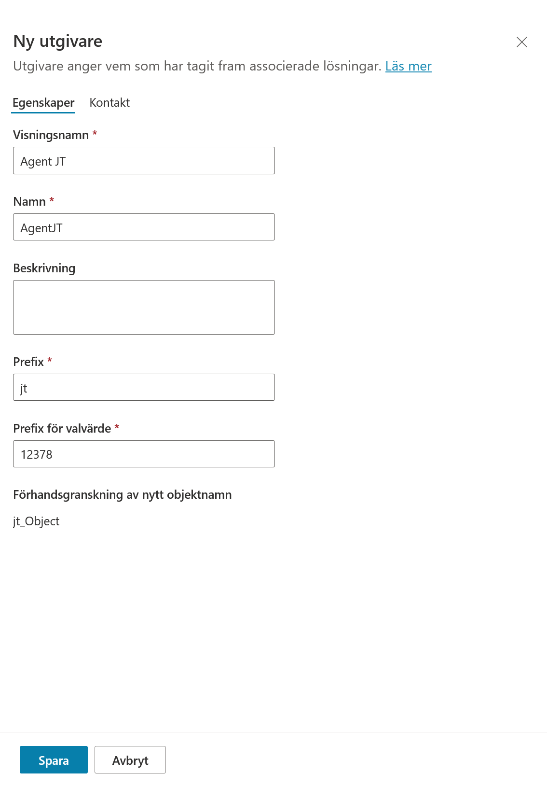
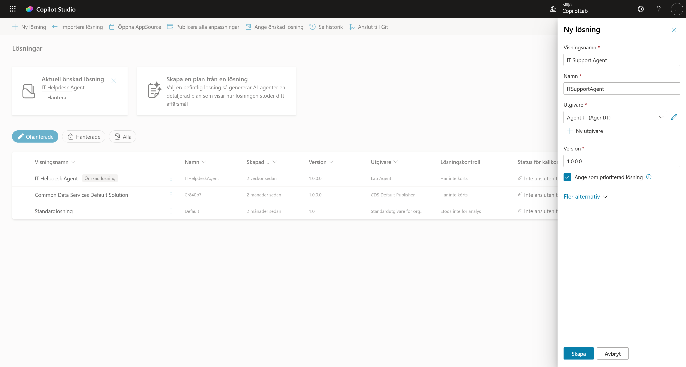
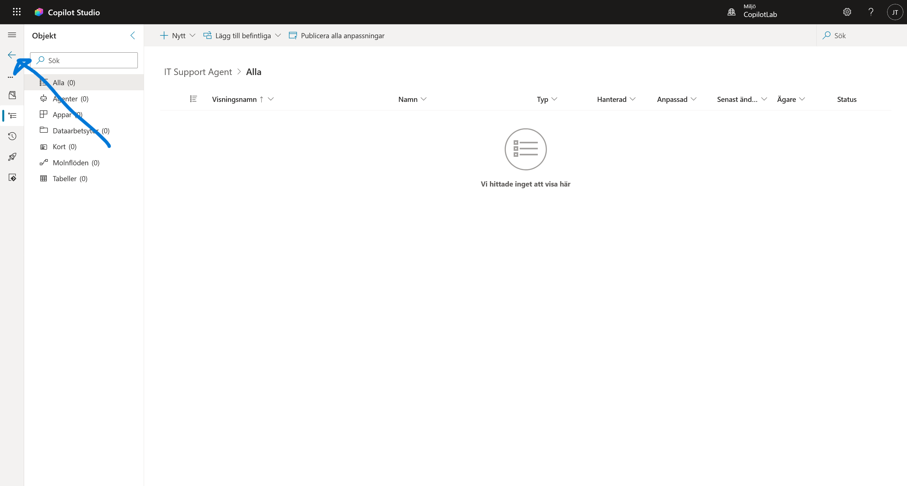
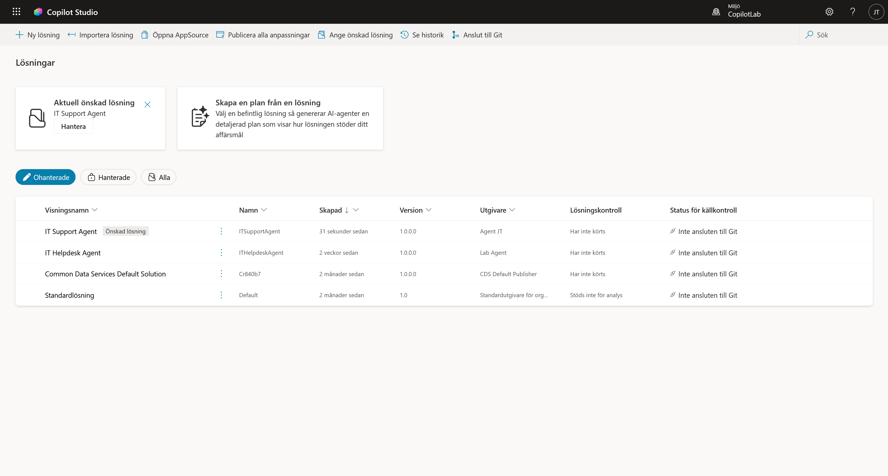

3. Skapa en Lösning (Solution)
Innan vi börjar bygga själva agenten ska vi skapa en "Lösning" (Solution). Tänk på detta som en digital portfölj eller en mapp där vi samlar allt som hör till vårt projekt.
Om vi inte gör detta hamnar allt i en stor röra som heter "Default Solution", vilket gör det omöjligt att flytta eller hantera agenten senare.
Varför Solution?
- Ordning: Allt som hör till din agent (chatboten, flöden, anslutningar) samlas på ett ställe.
- Flyttbarhet: Vill du flytta din agent från din Developer-miljö till företagets riktiga miljö? Då måste den ligga i en Solution.
Steg 1: Hitta till Solution Explorer
Vi kan hantera detta direkt inifrån Copilot Studio.
- I vänstermenyn, klicka på de tre prickarna (...).
- Klicka på Lösningar (under rubriken "Utforska").

- Nu ser du en lista på alla lösningar i miljön. Klicka på + Ny lösning.

Steg 2: Skapa en Publisher (Utgivare)
En "Publisher" är din signatur. Det visar vem som byggt agenten och lägger till ett prefix (t.ex. alab_) på alla dina tekniska komponenter för att undvika namnkonflikter med Microsofts system.
- I rutan som dyker upp, leta efter fältet Utgivare.
- Klicka på + Ny utgivare.

-
Fyll i följande uppgifter under fliken Egenskaper:
- Visningsnamn: Använd dina initialer, t.ex.
Agent JT - Namn: Samma utan mellanslag, t.ex.
AgentJT(Inga mellanslag) - Prefix: Dina initialer i gemener, t.ex.
jt(Detta kommer stå framför alla dina databasnamn, t.ex. jt_minTabell) - Valalternativprefix: Den slumpade siffran som redan står där fungerar bra. Du kan även ändra den till
10000om du vill ha ett renare nummer. (Detta styr vilka sifferkoder dina valalternativ får i databasen).
- Visningsnamn: Använd dina initialer, t.ex.
-
Du behöver inte fylla i något under fliken Kontakt.
- Klicka på Spara.

(Rutan stängs och du kommer tillbaka till Ny lösning-rutan. Din nya utgivare ska nu vara vald).
Steg 3: Skapa din Solution
Nu skapar vi själva lådan där vår agent ska bo.
- Visningsnamn:
IT Support Agent - Namn:
ITSupportAgent(fylls i automatiskt) - Utgivare: Välj den du nyss skapade (
Agent JT). - Version:
1.0.0.0(Låt det vara).
Viktigt steg: 5. Kryssa i rutan: Ange som din föredragna lösning. * Varför? Detta gör att allt du bygger framöver automatiskt sparas i denna lösning, även om du skapar saker från startsidan. Det förhindrar att dina filer hamnar i den stökiga "Standardlösningen".

- Fler alternativ: Du kan ignorera denna del (lämna fälten tomma). Vi behöver ingen konfigurationssida för denna labb.
- Klicka på Skapa.
Steg 4: Kontrollera och aktivera
Nu ska vi verifiera att lösningen är skapad och att den är inställd som standard.
- Klicka på pilen (Tillbaka) längst upp till vänster (eller på "Lösningar" i brödsmulorna) för att komma tillbaka till översikten.

- Titta högst upp på sidan. Du ska nu se en ruta där det står Aktuell föredragen lösning: IT Helpdesk Agent.

Eftersom vi kryssade i rutan "Ange som föredragen" tidigare ser vi nu detta meddelande. Det bekräftar att Copilot Studio vet att alla nya agenter ska läggas i just denna låda.
Klart!
Nu har du en professionell grundstruktur på plats. I nästa kapitel ska vi äntligen skapa vår agent!